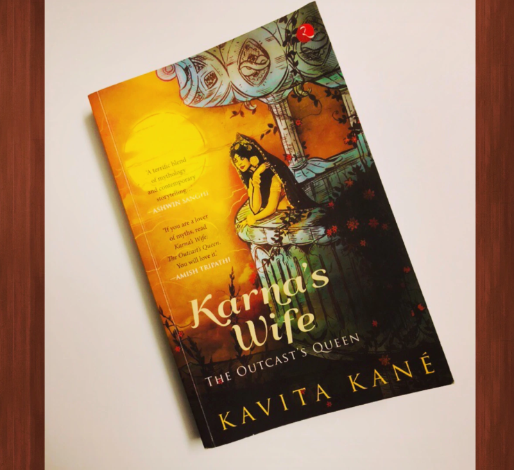
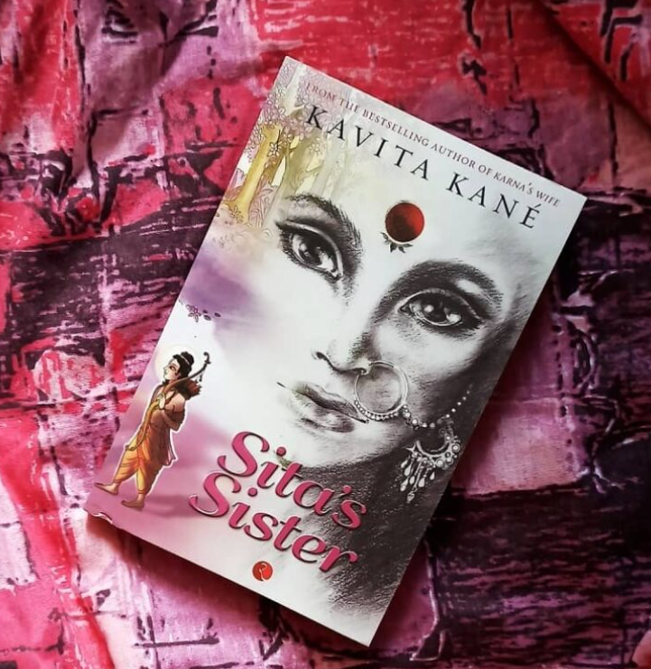
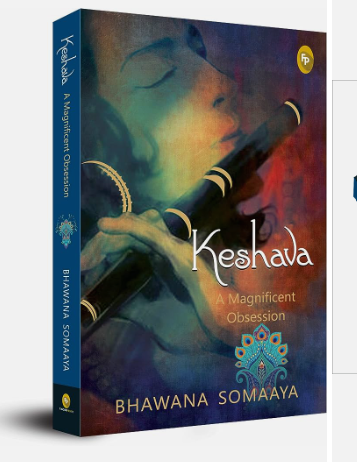

1.KARNA'S WIFE: THE OUTCAST'S QUEEN
Picking up a slice of Mahabharata, the epic tale of fight good and evil, justice and injustice , Kaurava and Pandav’s,
Kavita Kane, the author, narrates the poignant story of the unsung hero Karna from the eyes of a lesser-known character, Urvi.
The book renders a unique perspective to the venerable legend. Written in the genre of magic-realism the book reflects various
aspects of Karna’s nature. His unquestionable loyalty towards Duryodhana who in turn has unconditional love for the former,
the ghosts of Karna’s past and the mystery surrounding his birth are some of the themes that Kavita Kane structures her book
around in this tale. The accomplished Kshatriya princess, Urvi falls for the Sutputra-Karna, eventually discounting Arjun.
She chooses Karna over her childhood mate Arjun and faces fury from many. Caught between the social implications from her
act of defiance and her endeavours to gain respect and love from her husband, Urvi’s struggles as the outcast’s queen have
been explored. Urvi soon secures a key place in Karna’s life as a friend, counsellor and confidante. Between fighting her
own demons, she stands firm by her husband’s side, supporting Karna through all his misfortunes and struggles. As Karna’s
wife, the outcast’s queen, shows a refreshing facet of the battle of Kurukshetra and how the outcast rose above his destiny
to be forever regarded as ‘Daata Karna’.
ABOUT THE AUTHOR:
Kavita Kane is a former journalist who graduated from a Pune
college in English literature and also has a degree in journalism. After the success of her first book Karna’s Wife,
published in 2013, she has taken to full time writing and continuing with the mythology drama genre has written Sita’s
Sister, published in 2014 and Menaka’s Choice published in 2015.
To shop

2.SITA'S SISTER
From the bestselling author of Karna’s Wife, comes this book about Urmila, Sita’s sister and the neglected wife of Lakshman,
and one of the most overlooked characters in the Ramayana. As Sita prepares to go into exile, her younger sisters stay back at
the doomed palace of Ayodhya, their smiles, hope and joy wiped away in a single stroke. And through the tears and the tragedy
one woman of immense strength and conviction stands apart—Urmila, whose husband, Lakshman, has chosen to accompany his brother
Ram to the forest rather than stay with his bride. She could have insisted on joining Lakshman, as did Sita with Ram. But she
did not. Why did she agree to be left behind in the palace, waiting for her husband for fourteen painfully long years?From
the bestselling author of Karna’s Wife. The most detailed retelling of the story of the legendary Urmila, little known in
mythology. A riveting combination of fact and fiction that will keep readers engrossed. In the same genre as other bestsellers
like the Meluha series and Chanakya’s Chant.
ABOUT THE AUTHOR:
Kavita Kané is the bestselling author of Karna’s Wife: The Outcast’s Queen. She started her career as a journalist, and is now a
full-time novelist. She is a post-graduate in English literature and Mass Communications. She is a mother of two teenage
daughters and currently lives in Pune.
To shop

3. KESHAVA: A MAGNIFICIENT OBSESSION
Everyone associated with Sri Krishna believes that their relationship with the deity is unique, which explains why every gopika
felt that the Lord was dancing with her at the Maharaas. That is Sri Krishna’s magic and also his power that he becomes the
centre of their existence. He has that effect on not just humans but on everything on the planet—both living and non-living.
This book is about Sri Krishna’s relationship with nature; the Peacock, the Kadamba tree, the Flute, the herbal plant Tulsi,
the Lotus, his cow Kamadhenu, the Conch and the Peepala tree. All of them believe that Keshava loves them the most. Can this be
true? Keshava, A Magnificent Obsession is the story of these special bindings, stories of passion, submission, devotion and of
uncontainable desire.
ABOUT THE AUTHOR:
Bhawana Somaaya has been a journalist for almost 40 years. She is a film critic, columnist and author of 14 books and they are
a point of reference for students studying cinema at Whistling Woods, Manipal University and now JNU, Delhi. She has served on
Advisory Panel of Film Certificate in India and is currently the Entertainment Editor at 92.7 Big FM Radio channel. Somaaya’s
Krishna: The God who lived as Man released in 2008. Keshava: A Magnificent Obsession is her second offering to the deity.
Somaaya was conferred with the Padma Shri in 2017.
To shop